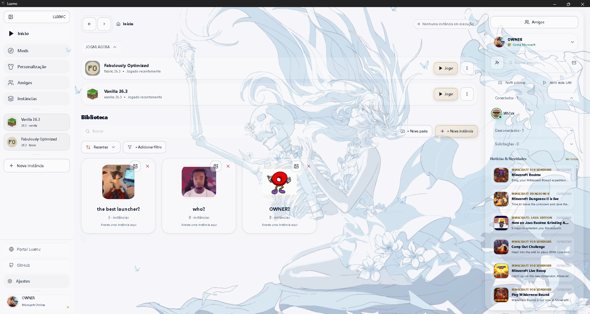

Cada mundo com seus mods, versão e configurações. Organize instâncias sem misturar arquivos.
UM LAUNCHER PARA QUEM JOGA DO PRÓPRIO JEITO.LUXMC / DESKTOP
Seu mundo.Suas escolhas.
Um modpack novo. Aquele mundo antigo. Sua turma online. Tudo começa no seu launcher.

Feito para o seu desktop. Com raízes no Linux.Conheça o LuxMC
POR DENTRO DO LAUNCHER
Um lugar para
Um lugar para
cada versão.
Vanilla hoje. Um modpack amanhã. Cada instância guarda seus próprios mods, mundos e configurações.
Encontre conteúdo no Modrinth e CurseForge. Instale na instância certa, dentro do launcher.
Importe uma skin, combine uma capa e confira a aparência em 3D antes de aplicar.
Perfis públicos, favoritos e convites. Uma sala reúne as pessoas; cada instância conserva seus próprios arquivos.
Crie pastas com nome e imagem, arraste suas instâncias e mantenha os packs que joga por perto.
Interface do LuxMC · capturas enviadas pelo autorVANILLA / FABRIC / FORGE / NEOFORGE / QUILT
Performance sob controle.
Escolha Java, memória e argumentos JVM por instância. Pause efeitos do launcher durante o jogo.
Sua biblioteca vem junto.
Importe mundos, arquivos .mrpack e pacotes CurseForge. Faça backup e exporte quando quiser.
Feito para o seu desktop.
Backend em Rust e interface Svelte. Desenvolvimento público, com raízes no Linux.
LUXMC / 3.6Sua turma.
Sua turma.
O mesmo ponto de partida.
Planeje mudanças, confira os arquivos e prepare uma instância separada para jogar com seus amigos.
Prepare e acompanhe.
A receita da sala reúne versões e mods dos provedores. Cada participante vê o progresso e conserva suas outras instâncias.
Veja antes de mudar.
Compare arquivos, dependências e configurações antes de atualizar. Consulte o impacto de remover um mod no mapa da instância.
Compartilhe a próxima aventura.
Guarde coleções no seu perfil com as versões exatas. Use as medições deste PC para escolher entre suas instâncias.
CATÁLOGO MODRINTH
O próximo mod
O próximo mod
da sua lista.
Explore o catálogo ao vivo do Modrinth. No LuxMC, o CurseForge também está integrado.
/
Os filtros mostram versões e loaders declarados pelos autores. A instalação e a seleção de arquivos continuam no launcher.
CRASHDOCTOR + MOD SHIELD
Deu crash?
Deu crash?
Tem diagnóstico.
Um log enorme não precisa encerrar a partida. O CrashDoctor traduz problemas conhecidos e aponta o próximo passo.
01
CrashDoctor
Diagnóstico de logs e ações para Java, memória, mods incompatíveis e arquivos ausentes.
02
Mod Shield
Verifica hashes de ameaças conhecidas e estruturas suspeitas nos arquivos .jar. Não substitui um antivírus.
01 / runtimeJAVA 21
02 / JVM argumentsCHECK
-XX:+UseFastAccessorMethodsLEGACY
03 / incompatible optionREMOVED
04 / launch argumentsREADY
Diagnóstico disponível no launcher.↗
Menos adivinhação. Mais informação.
DEMONSTRAÇÃO VISUAL · SEM ACESSO AO SEU COMPUTADOR
SEU PERSONAGEM
Não é só uma skin.
Não é só uma skin.
É você no jogo.
Importe seu PNG, escolha o modelo dos braços e experimente capas. O Skin Studio mostra cada detalhe antes de aplicar.
Abrir Skin Studio
SEU MUNDO LAN, COM A SUA TURMA.
O convite começa
O convite começa
pelo nickname.
-
1
Adicione seus amigos à conta LuxMC.
-
2
Abra seu mundo para LAN no Minecraft.
-
3
Crie o convite pelo launcher e compartilhe.
Consultar um servidor Minecraft
SEUS ARQUIVOS, NO SEU DISCO
Você joga.
Você joga.
Você tem o controle.
Instâncias e arquivos no seu disco. Código público para consultar. Serviços externos identificados na política de privacidade.
Entenda como seus dados são usados
Arquivos locaisCódigo públicoSite sem anúnciosImportar & exportar
MEDIÇÃO LOCAL
Consumo observado.
Luxmc 3.6.0 instalado no Windows, na tela inicial com wallpaper e GIFs personalizados. A janela estava aberta em segundo plano durante uma partida de Warframe.
Memória residente somada
711,2 MiBLauncher e WebView · 7 processosCPU média observada
4,40%Normalizada por 12 processadores lógicos30 amostras, aproximadamente uma por segundo, sem Minecraft aberto. Somente os processos do launcher e WebView entram nos números. A memória soma os working sets e pode contar páginas compartilhadas mais de uma vez. É uma observação em um PC, com outros aplicativos ativos, e não uma comparação controlada entre versões. Consumo varia com o PC, páginas abertas e personalização.
Ver dados e condições da medição
COMECE A JOGAR
Escolha seu sistema.
Escolha seu sistema.
O resto é LuxMC.
Gratuito para uso pessoal. Baixe o pacote oficial para o seu desktop, direto do release.
Windows
Windows 10 / 11 · x64
Baixar instalador .exe
Release oficial
Linux
Ubuntu / Fedora / Arch / Debian
Baixar .AppImagemacOS
Confira a arquitetura no release.
Conferir pacote .dmgv3.6.0 · Disponibilidade consultada no GitHub. Sem cadastro obrigatório.
Prefere o terminal? Instale no Linux.
curl -fsSL https://luxmc-r92.pages.dev/install.sh |
bash
Independente. E feito para continuar.
Quer ajudar nos custos do projeto? O apoio é voluntário, via PIX.
O LuxMC é gratuito?
Sim, para uso pessoal. O projeto tem uma licença própria; consulte as condições no repositório antes de distribuir ou usar comercialmente.
Preciso de uma conta Microsoft?
O launcher aceita login Microsoft e perfis locais. Servidores com autenticação oficial exigem uma conta Microsoft com Minecraft. A conta LuxMC é opcional e não substitui a licença do jogo.
Posso trazer meus mundos e modpacks?
Sim. Importe mundos em pasta ou .zip, modpacks .mrpack e pacotes CurseForge. Cada instância mantém seu próprio conteúdo e configurações.
Como funciona o multiplayer?
Abra um mundo para LAN no Minecraft e compartilhe um convite do LuxMC. O túnel conecta os participantes diretamente ou por relay, conforme as condições da rede.
O site instala os mods no meu computador?
O botão “Instalar no LuxMC” abre o aplicativo pelo protocolo luxmc://. Lá você seleciona a instância e a versão. Se o launcher não abrir, o site mostra como baixá-lo.